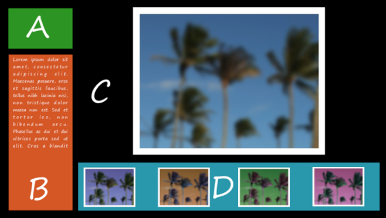
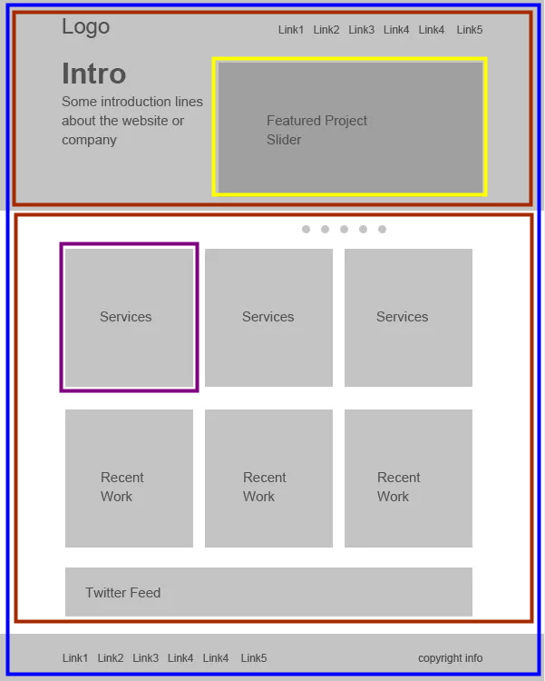
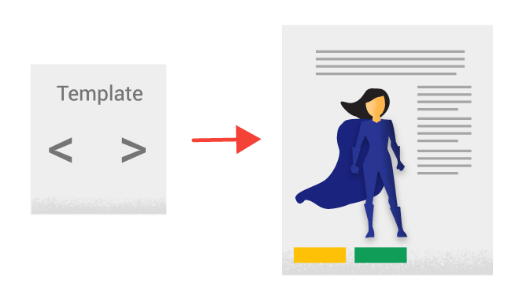
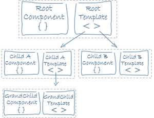

Angular 강좌(3) - Component
Angular 강좌는 여러 절로 구성되어 있습니다.
- Angular 강좌(1) - Introduction
- Angular 강좌(2) - 개발환경세팅
- Angular 강좌(3) - Component
- Angular 강좌(4) - Angular Material
- Angular 강좌(5) - 실습(1)
- Angular 강좌(6) - Data Binding
- Angular 강좌(7) - 실습(2)
- Angular 강좌(8) - Material Table
- Angular 강좌(9) - 데이터공유(@Input)
- Angular 강좌(10) - 데이터공유(@Output)
- Angular 강좌(11) - 데이터공유(@ViewChild)
- Angular 강좌(12) - 데이터공유(Content Projection)
- Angular 강좌(13) - Service
- Angular 강좌(14) - Service Mediator Pattern
- Angular 강좌(15) - Service RxJS
- Angular 강좌(16) - Material Table Event
- Angular 강좌(17) - 중간 정리
- Angular 강좌(18) - Directive
- Angular 강좌(19) - Pipe
- Angular 강좌(20) - Component Lifecycle
Component 개요
Angular는 Front End Web Application Framework입니다.
우리는 Angular로 Web Browser상에서 동작하는 Client가 사용하는 응용 프로그램을 만들어 낼 수 있습니다.
이런 프로그램은 사용자가 직접 접근할 수 있는 View라는 것을 가지고 동작합니다.
전체 웹 어플리케이션 화면이 하나의 View가 될 수도 있고 어플리케이션 화면의 기능이나 목적에 따라 세부 View들로 분할 되어 웹 어플리케이션의 화면을 구성할 수 도 있습니다.
예를 들면 다음과 같이 View를 분할해서 화면을 구성할 수 있습니다.

위의 그림에서 A는 로고영역, B는 사진에 대한 설명영역, C는 주 사진보기 영역, D는 컬렉션에 있는 다른 사진의 미리보기 영역입니다.
이렇듯 우리는 화면을 여러 View들로 분할해서 구성할 수 있다는 것이죠.
분할된 View들은 결국 Angular에서 Component의 단위가 됩니다.
위의 그림은 View들이 화면을 분할하고 있는 형태입니다. 이렇게 할 수도 있지만 아래의 그림처럼 하나의 View안에 여러 View들을 넣어 화면을 구성 할 수도 있습니다. 파란색 View안에 2개의 빨간색 View가 들어가 있고 그 안에 다시 View들이 구성되어 있는 형태입니다. 이렇게 View간의 포함관계가 성립될 수 있고 결국 View들간에 부모와 자식의 관계가 성립되게 됩니다.
View는 결국 Component의 단위가 된다고 했으니 View들의 관계에 의해서 Component들도 부모와 자식간의 관계가 생기게 됩니다.
이런 Component간의 관계가 크게 보면 tree모양으로 구성되게 되는데 이를 Component Tree라고 하는데 Angular의 중요한 개념 중 하나입니다.
이 Component tree의 제일 위쪽에 위치한 Component를 우리는 Root Component라고 부릅니다.

Component는 View를 rendering하는 주체가 되기 때문에 어떤 정보로 View를 rendering할 것인가에 대한 정보를 가지고
있어야 합니다. 이 정보를 우리는 Template이라고 합니다.
Template
Template은 View를 rendering하기 위해 필요한 HTML Element와 Angular의 문법요소 그리고 클라이언트
이벤트 처리 코드를 담고 있습니다.
Application 실행 시 Angular는 Component와 Template의 정보를 이용하여 View를 그리게 됩니다.

Component - class
기존에 만들어 놓았던 MySearchProject를 살펴보면서 코드상으로 Component를 이해해보죠. WebStorm에서 우리가
작성한 프로젝트를 보면 src 폴더가 보입니다. 이 src폴더를 보면 index.html 파일이 존재하는데
이 파일이 우리 Web application의 시작 HTML파일입니다.
즉, http://localhost:4200 으로 접속하면 rendering되는 파일이 바로 이 index.html입니다.
아래의 내용은 index.html 입니다.
<!doctype html>
<html lang="en">
<head>
<meta charset="utf-8">
<title>MySearchProject</title>
<base href="/">
<meta name="viewport" content="width=device-width, initial-scale=1">
<link rel="icon" type="image/x-icon" href="favicon.ico">
</head>
<body>
<app-root></app-root>
</body>
</html>
<app-root></app-root>라는 태그 대신에 특정 내용이 화면에 보이는 구조이군요. 즉, <app-root></app-root>가 하나의
View라는 의미입니다. 당연히 그에 대응되는 Component가 존재하겠네요.
src/app 폴더에 보면 app.component.ts 파일이 있습니다. Component를 정의한 파일이고 TypeScript로 작성되어 있기 때문에
확장자는 .ts를 이용합니다. 파일을 열어보면 다음과 같은 내용이 들어있습니다.
import { Component } from '@angular/core';
@Component({
selector: 'app-root',
templateUrl: './app.component.html',
styleUrls: ['./app.component.css']
})
export class AppComponent {
title = 'app';
}
코드에서 맨 마지막에 나타나듯이 Component는 class입니다. 하지만 class를 선언한다고 해서
해당 class가 무조건 Component가 되는것은 아닙니다. 이 class가 Component로 사용된다는 것을 Angular에게
알려주어야 Angular가 Component로 동작을 시킬수 있을 겁니다. 그래서 특정 표현을 이용해
해당 class가 Component임을 Angular에게 알려주어야 합니다.
@Component라고 표현되는 부분이 바로 Component decorator입니다. 무언가와 많이 비슷하죠? 의미상 Java의
Annotation과 하는일이 유사하다고 보시면 됩니다. class상단에 Component decorator를 이용해 Angular가 해당 class를 Component로
인지할 수 있도록 합니다.
@Component를 이용하려면 당연히 Component decorator를 사용할 수 있는 상태여야 하고 이 Component decorator는
@angular/core라고 표현되는 Angluar Core Module Package에서 제공합니다. 해서 아래와 같은 코드가 필요합니다.
import { Component } from '@angular/core';
Component - Metadata
위에서 Component decorator에 대해서 알아봤는데 이 Component decorator를 이용해 설정 정보를 Angular Framework에게
전달할 수 있습니다. 이 설정정보를 Metadata라고 하며 다음과 같은 코드로 표현됩니다.
@Component({
selector: 'app-root',
templateUrl: './app.component.html',
styleUrls: ['./app.component.css']
})
Component decorator안에 표현될 수 있는 Metadata는 상당히 종류가 많지만 필수요소는 없습니다. 하지만 selector와
template 정보는 존재하지 않으면 화면에 rendering이 되지 않기 때문에 필수요소라 볼 수 있습니다.
-
selector: template 코드안에서 해당 Component를 사용하고자 할 때 이용할 HTML Element명을 정의합니다. 위와 같은 경우 해당 Component는 <app-root></app-root> HTML Element로 사용될 수 있습니다. -
template 정보: template 혹은 templateUrl을 이용할 수 있습니다. template은 View를 rendering할 때 필요한 HTML을 inline형태로 직접 기술할 때 사용됩니다. templateUrl은 template code를 따로 HTML 파일로 분리해서 작성할 때 사용합니다. -
style 정보: styles 혹은 styleUrls을 이용할 수 있습니다. template 정보에 명시된 HTML에 대한 style을 정의한 CSS가 inline형태 혹은 파일 형태로 포함될 수 있습니다. 여러 CSS 정의와 파일을 이용할 수 있기 때문에 배열형태로 표현합니다.
Module & Bootstrapping
Bootstrapping이란 browser에서 application이 최초로 실행될 때 진행되는 과정을 의미합니다. 우리가 작성한 Component는
application이 bootstrapping될 때 Angular에 의해서 제어되게 됩니다.
Angular에는 Module 개념이 있습니다. Module은 Application을 구성하는 단위로 관련된 요소를 하나로 묶어 놓은 것으로 생각하시면
됩니다. Angular는 Module단위로 application 코드를 인식하기 때문에 모든 Angular application은 반드시 하나 이상의 Module을
가지게 되며 최상위 모듈을 우리는 Root Module이라고 부릅니다.
이러한 Module안에 Component와 같은 것들을 선언해 놓아야 비로소 사용할 수 있게 됩니다.
Root Module은 관례상 AppModule이라 명하고 class로 표현하게 됩니다. src/app 폴더안에 app.module.ts 파일이 존재하는데
이 파일안에 Root Module이 정의되어 있습니다.
// BrowserModule은 Web Application인 경우 Root Module에서
// 반드시 import 처리를 해야 합니다.
import { BrowserModule } from '@angular/platform-browser';
import { NgModule } from '@angular/core';
import { AppComponent } from './app.component';
@NgModule({
declarations: [
AppComponent
],
imports: [
BrowserModule
],
providers: [],
bootstrap: [AppComponent]
})
export class AppModule { }
BrowserModule은 Web Browser를 위한 Module입니다. 지금 우리가 작성하는 프로젝트처럼 브라우저에서 동작하는 Web Application인 경우 Root Module은 반드시 BrowserModule을 import해야 합니다.
위의 코드에서처럼 AppModule class가 정의되어 있고
상단에 @NgModule decorator를 이용하여 우리의 class가 Module임을 명시했습니다.
import { AppComponent } from './app.component';
위의 코드는 아까 살펴본 Component인 app.component.ts 파일로부터 AppComponent class를 import하는 부분입니다. 아까 위에서
AppComponent class를 export 처리했던 걸 보셨을 텐데 이렇게 export된 class를 외부에서 import해서 사용할 수 있습니다.
.ts파일로부터 import를 할 경우 확장자인 .ts는 명시하지 않습니다.
이렇게 import한 class를 Module안에서 declarations를 이용해 선언해서 사용하게 됩니다.
declarations안에는 Component, Directive, Pipe에 대한 리스트가 선언됩니다. 이렇게 선언된 요소만이 Module내에서 사용이 가능합니다.
imports안에는 의존 관계에 있는 Angular Library Module과 하위 Module, Routing Module, Ionic과 같은 Third Party Module이 포함됩니다.
@NgModule decorator의 Metadata 중 bootstrap은 오직 Root Module만 가지고 있는 property입니다.
application이 bootstrapping될 때 Root Module에 의해서 어떤 Component가 사용될 것인지를
배열로 선언합니다. 즉, bootstrap은 browser가 최초로 index.html을 읽어들여 application을 시작할 때 사용할
Component를 명시하게 됩니다.
@NgModule decorator의 Metadata에 사용되는 Component를 등록해 놓아야 우리가 작성한
Component의 TypeScript 코드를 browser에서 실행 가능한 JavaScript 코드로 compile해서 변환시킬 수 있습니다.
마지막으로 src/main.ts 파일을 열어보면 다음과 같은 코드를 볼 수 있습니다.
platformBrowserDynamic().bootstrapModule(AppModule)
.catch(err => console.log(err));
Angular는 저 위의 코드로 AppModule을 읽어들이고 Module안에 등록된 여러 Component들을 JavaScript 코드로 compile하게
되는 것 입니다.
정리하자면 Root Module은 최상위 Module로 main.ts에 의해 bootstrap됩니다. 이 때 위에서 언급한 Component Tree의
최상위 Component인 Root Component가 Root Module에 의해서 bootstrap되는 것이지요. 따라서 모든 Angular 프로젝트는
Root Module과 Root Component를 반드시 가지고 있어야 합니다.
지금까지 살펴본 것처럼 만약 Angular CLI를 이용하지 않으면 우리가
.ts파일을 만들어서 등록하는 과정을 직접해야 합니다. Angular CLI를 이용하면 기본 Skeleton 코드의 생성과 등록절차까지 자동으로 처리되게 됩니다.
Component Tree
사실 위에서 언급한 내용인데 중요한 부분이니 다시한번 정리하고 넘어가겠습니다.
Angular application안에는 여러 View들이 존재할 수 있습니다. 개념적으로 하나의
View안에 여러개의 View들이 child형태로 존재할 수 있습니다. View는 Component와 대응된다고 했으니 결국 Component안에
Component가 child형태로 구성될 수 있다는 의미겠네요. 이것을 우리는 Component Tree라고 합니다.
그림으로 표현하자면 다음과 같이 표현될 수 있습니다.

좀 어렵게 표현하자면 application의 화면구성을 끝내면 그 내용을 토대로 View를 결정해서 Component단위로 Modeling 해야 합니다.
이번 포스트에서는 Angular Component의 기본적인 사항에 대해서 알아보았습니다.
여기까지의 내용을 가지고 간단한 실습을 진행하면서 다른 사항들도 하나씩 알아보도록 하겠습니다.
실습을 진행하기에 앞서 Angular Material에 대해 먼저 알아보고 Material을 이용하여
우리 mySearchProject의 화면을 분할 하고 Component를 생성해 보는 실습을 진행하도록 하겠습니다.
End.
Angular 강좌는 아래의 책과 사이트를 참조했습니다. 조금 더 자세한 사항을 알고 싶으시면 해당 사이트를 방문하세요!!
- Angular Official HomePage
- Angular Material Official HomePage
- Build a Mobile App with Angular 2 and Ionic 2
- Angular 첫걸음 - 한빛미디어
- 제대로 배우는 Angular 4 - 비제이퍼블릭